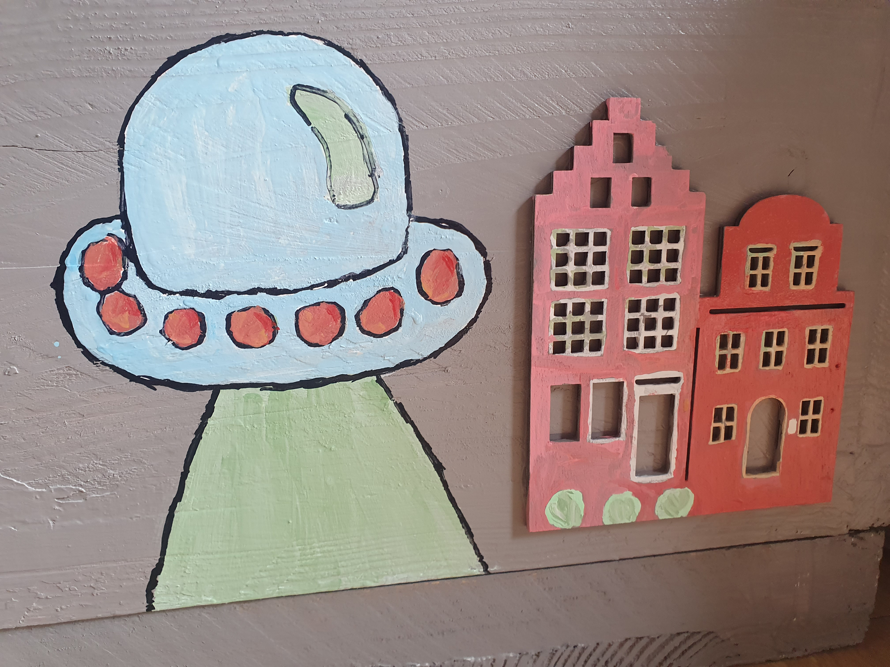

Standplaatsen uit de database
Gegevens worden geladen…
Een bijenkast is meer dan alleen een doos. Het is een thuis voor een levende kolonie, een netwerk van bijen dat samenwerkt aan nectar, honing en voortplanting.
Wat is een kolonie?
Een kolonie bestaat uit de koningin, werksters en darren. Samen zorgen zij voor de ontwikkeling van het volk, de voorraad voedsel en de verzorging van jonge bijen.
Hoe verzorgen wij de kast?
- Regelmatige controle op gezondheid en broed.
- Bescherming tegen koude, vocht en plagen.
- Ruimte bieden voor groei en voldoende nectaropvang.
Waarom is dit belangrijk?
Een gezonde kolonie produceert betere honing, heeft minder kans op uitval en draagt bij aan de lokale biodiversiteit. Daarom werken we met aandacht en respect voor de bij.
Interesse in een eigen kast?
Wij helpen graag met advies, plaatsing en begeleiding. Neem contact op als je meer wilt weten over een kast, bijenkastbeheer of onze honing.